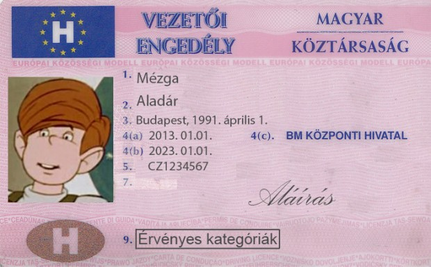
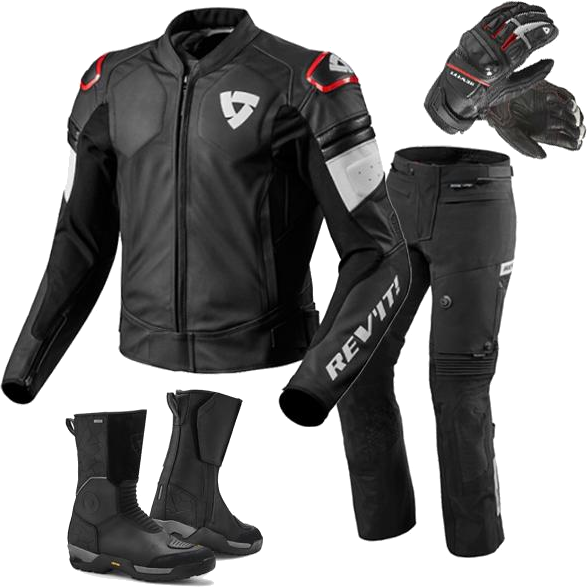

Az AM (50cm³) jogosítványt már 13,5 évesen el lehet kezdeni és 14 évesen ülhetünk először motorra, de ha letesszük az autóra a jogosítványt akkor azzal együtt megkapjuk az AM-et
Az A1 (125cm³) jogosítványt 15,5 évesen el lehet kezdeni és 16 éves korunkra már kézbe kaphatjuk a kis rózsaszín kártyát. Azonban ha előbb letesszük autóra a jogosítványt akkor rövidített óraszámban, sokkal olcsóbban és elmélet nélkül letehetjük az A1-et. Szerintem érdemes megvárni aki szeretne a jövőben 125-ös gépsárkánnyal motorozni
Az A2 (600cm³) jogosítványt 17,5 évesen el lehet kezdeni és mint eddig fél év múlva már motorra is ülhetünk, ha két éven belül tettük le az A1-et akkor az elmélet elhagyható.
Az A (korlátlan) jogosítványt 24 évesen kaphatjuk kézbe viszont ha már két éve van A2 jogosítványunk akkor akár 20 évesen a magunkénak tudhatjuk.
Lent a táblázatban kicsit átláthatóbban van ábrázolva.
| kategória | életkor | vezethető legmagasabb teljesítmény |
|---|---|---|
| AM | 14 | 50cm³ (4kW, 5hp) |
| A1 | 16 | 125cm³ (11kW, 15hp) |
| A2 | 18 | 35cm³ (35kW, 48hp) |
| A | 24(20 ha 2 éve megvan az A2) | KORLÁTLAN |
Sajnos a motorozás sem egyveszélytelen hobbi, sok autós nem veszi figyelembe a motorosokat és ebből komoly gondok szoktak lenni.
Nagyon sokszor nem adják meg az elsőbbséget, rettentő közel előznek meg minket és sokszor úgy gondolják hogy két kerék miatt akárhol elférünk ezért sokszor egy szűk úton nem foglalkoznak velünk és konkrétan letolnak onnan
És mivel a motor sokkal kevésbé biztonságos egy baleset során mint egy autó...

Fontos az időjárásra is figyelni. Külön nyári és öszi/tavaszi ruha kell ha minden időt ki szeretnénk használni a motorozásra. Sokan csinálják hogy a vékonyabb ruha alá felvesznek egy sport aláöltözetet és így a hidegebb időkben is jó a nyári felszerelés.
